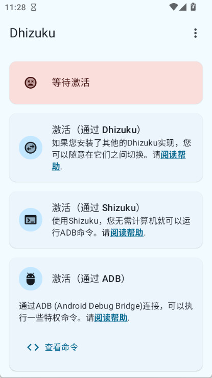
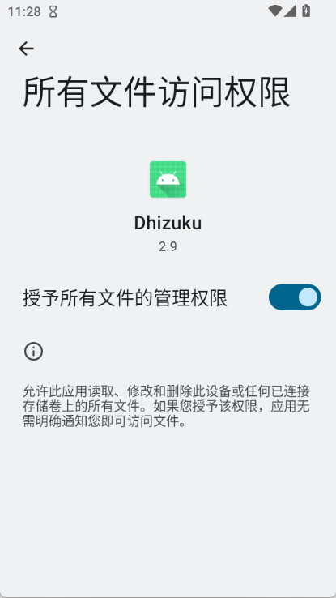

我给五台 Android 测试机搭了一条自动管控流水线
手头测试机多了以后，应用冻结、策略下发、权限回收这些零散操作压得人喘不过气，Dhizuku 把设备所有者权限做成了可借用的服务，整条链只在激活那天花一次力气。
我手头常年飘着五台 Android 测试机——两台 Pixel 跑原生，一台小米，一加荣耀，还有一台老三星留着测兼容性。以前每到版本发布前要清场的时候，这五台机子能耗我一整个下午：逐个手动卸载测试包、冻结预装广告、改一遍开发者选项里的策略开关、清工作资料残留……每台机器重复一遍，手指都在屏幕上磨出茧。
后来换了个思路：既然这些操作本质上都是「设备所有者」级别的 API 调用，能不能激活一次，让所有工具都通过一个中介来要权限？ 于是我去官网转了一圈，Dhizuku 进了我的工作流。
旧流程的痛点其实不是"麻烦"，是"不可控"
先说说之前怎么干的。冻结应用用 Hail，每台机子单独激活一次 Shizuku 或者 ADB shell 跑一遍 dpm 命令；改设备策略用 Device Policy Controller 自带的工具，又是一套独立激活；遇到系统更新后权限掉了的情况，得连电脑重新设设备所有者身份——而且系统提示框跳在前台，脚本没法自动过，必须人盯着点确认。
最糟糕的是身份冲突。有次装了个电池优化工具也要当设备所有者，结果把已有的 Hail 激活状态顶掉了，半夜测包的时候突然发现所有冻结的广告应用全跑出来弹通知，定位问题花了俩小时。
新流程：Dhizuku 当唯一的中介
现在的架构很简单——Dhizuku 激活成唯一的设备所有者，其他工具全部走它的 API 来借权限。整条链长这样：
触发源（GitLab CI 的版本发布任务）→ 脚本层（Python 写的测试机管控脚本，通过 Dhizuku 的 API 批量下发指令）→ 中介层（Dhizuku 在每台测试机上常驻，负责代执行并返回结果）→ 执行层（Hail 负责冻结/隐藏、系统 DPM 负责策略下发）。
衔接点有几个值得说的。脚本这边走的是 Maven Central 上的 io.github.iamr0s:Dhizuku-API 依赖，Gradle 一行就能引入，初始化调用一次之后，后面的权限请求都是弹窗批准一次就免重复授权。五台测试机我只激活了一次 Dhizuku——先从下载拿了安装包装上，激活那天花了大概二十分钟清多余用户、检查 Shizuku 启动状态、跑 dpm 命令，之后再也没碰过激活流程。
流程里最容易断链的两个环节
Shizuku 启动状态
激活 Dhizuku 的三条路径里，我选的是 Shizuku 路线——不用连电脑，无线调试就能起服务。但 Shizuku 默认是停止状态，每次重启测试机后不会自动恢复。我踩过一次坑：早上开机器跑测试，脚本报「Dhizuku 服务不可用」，排查了半小时才发现是 Shizuku 服务没起来。
现在的处理方式是：在管控脚本里加了一个前置健康检查——先探测 Dhizuku 的授权应用列表能不能正常返回，如果报空或者服务不响应，就自动走一次 ADB 路径激活（反正测试机都连着 ADB 调试），检测到激活成功后再继续下发指令。这样 Shizuku 状态漂移成了可自恢复的环节，不再卡主流程。

文件访问权限
管控脚本里有一步要把测试机上的 crash log 打包拉回来分析，Dhizuku 需要拿到「所有文件访问权限」才能代理其他应用做完整文件读取。这个权限不在普通的应用设置里，藏在系统设置 → 应用 → 特殊应用权限 → 所有文件访问权限里，每台机器都得手动开一遍。
好消息是后来翻了一下Dhizuku文档才知道激活前不需要全开——激活成功、开始配合具体工具用的时候按需开就行。第一次跑脚本报错「部分文件操作失败」的时候我还以为是权限问题全堆在一起了，后来才知道只要保证通知权限和电池优化白名单这两项先到位，中介服务不会被后台杀掉，其他权限可以边用边补。

效果：省了两次手动复制 + 一次重启重激活
量化一下这条流程的收益：
- 之前五台机器清场需要2.5~3 小时（含半小时手动处理 Shizuku 状态漂移和设备所有者冲突）；现在 CI 任务触发后自动跑完，实测8 分钟，中间没人盯着。
- 之前每次设备所有者身份被顶掉需要重启 + 连电脑重新激活整套流程；现在 Dhizuku 是唯一所有者，这个问题从根上消失了。
- 文件权限的手动操作从「每台机器跑一遍」变成「激活时统一设一次」，后续不再出现权限漂移。
但这条链也有边界。首先，激活这一步没法自动化——设备所有者身份的设置本身就是系统级操作，必须人在场走一遍 Shizuku 或 ADB 路径，而且激活前必须清掉所有多余用户（应用分身、隐私空间、访客模式这些都算，一个都不能留）。其次，老系统（Android 10 及以下）不支持无线调试，启动 Shizuku 必须连电脑，这也是为什么我在脚本里保留了 ADB 兜底路径。最后，如果哪天脚本里引入了需要「直接当设备所有者」而不是「借权限」的新工具，还是会遇到身份冲突——好在目前用的 Hail、Amarok、自定义 DPM 工具都走 Dhizuku API，短期内不会触发这个问题。
总结一下我的选型逻辑
选 Dhizuku 而不是其他方案，核心原因是它把设备所有者从一个「应用身份」变成了「可借贷的服务」。Hail、Amarok 这些主流工具已经接入了它的 API，新工具如果需要设备所有者能力，只要引一行 Gradle 依赖就能借权限用，用户侧只需要「中介已激活」这一个前置条件，不用再引导清账号、连电脑。开发者侧成本也低——初始化接口一次调用，权限请求弹窗批准一次，之后都是免授权调用。
激活那天花的二十分钟，换来了之后每次版本发布前置检查的全自动——这笔账我觉得划算。
这套资料我分别同步到了GitHub、Gitee、GitCode 三个镜像仓库，顺手铺三份主要是考虑到国内访问速度和多一份备份的安心感；如果某个仓库因为不可抗力挂了，切到另一个就能继续看。